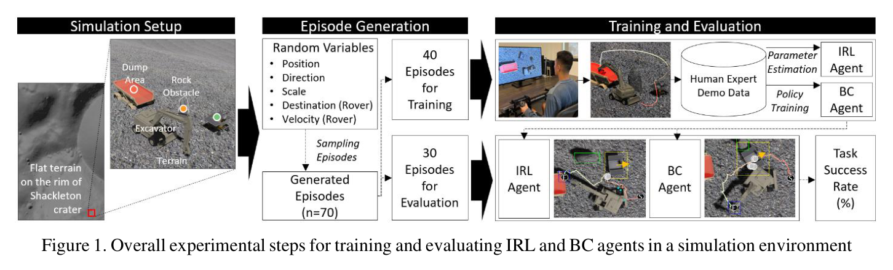
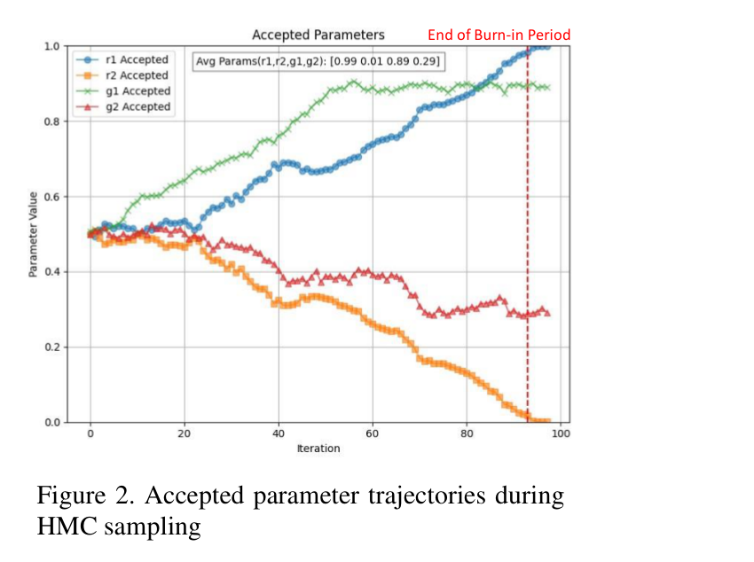
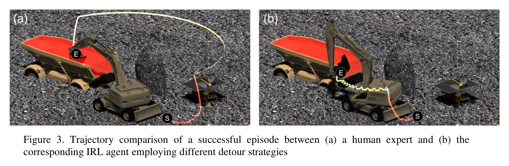
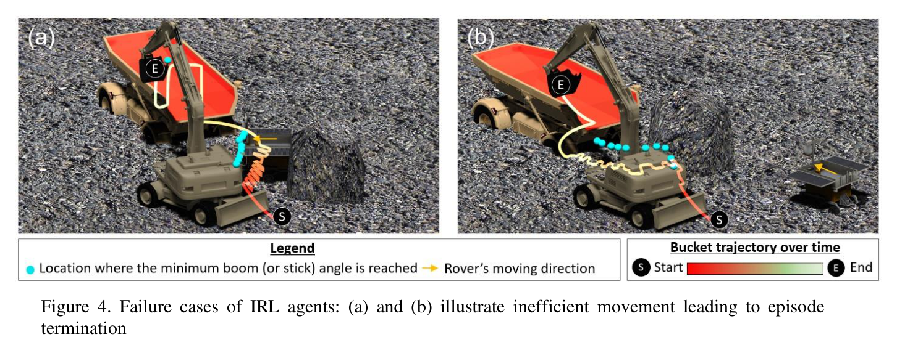
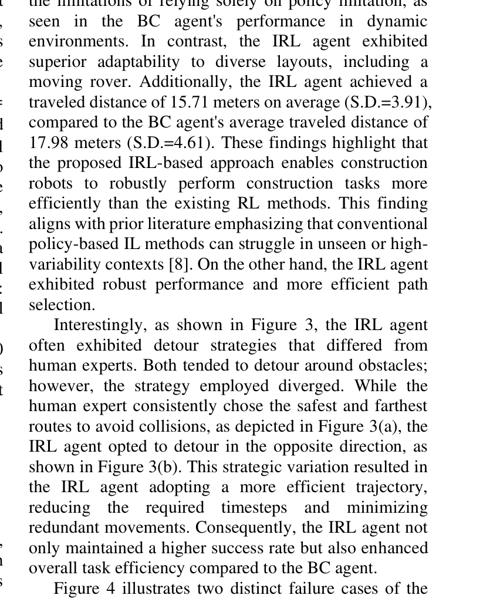

Human-Inspired Inverse Reinforcement Learning for Autonomous Excavator Operations in Lunar Environments
Minguk Kim, Youngjib Ham · 42nd International Symposium on Automation and Robotics in Construction (ISARC 2025)
한줄 요약 — 전문가 조이스틱 시연에서 obstacle avoidance와 targeted material placement의 보상 가중치·단위보상·시간 할인율을 HMC로 추정하고 공간·시간 거리를 상태 가치에 명시적으로 반영하여, 단순화된 달 표면 Unity 운반 작업에서 행동복제보다 높은 73% 성공률과 짧은 15.71 m 평균 이동거리를 달성했지만 실제 굴착·달 토양·장비 동역학은 검증하지 않았다.
1.연구 배경 및 동기
달 건설장비의 희소 데이터와 설명 가능한 작업 보상을 위한 모듈형 IRL
달 기지 건설에서는 regolith 운반과 잔해 제거를 위해 굴착기형 장비가 반복적으로 cabin과 boom·stick을 움직여야 한다. 원격지의 제한된 통신과 인간 작업자 부족 때문에 자율화가 필요하지만, 실제 달 환경의 시연 데이터는 거의 없고 지상에서 설계한 수작업 reward가 복잡한 장애물·이동체 상황을 충분히 표현하기 어렵다. 큰 심층 강화학습 모델은 많은 상호작용과 계산자원을 요구해 에너지와 연산이 제한된 우주 임무에 부담이 될 수 있다.
논문은 인간이 복잡한 행동을 여러 기능적 subtask로 나누어 판단한다는 관점에서 obstacle avoidance와 targeted material placement를 분리한 inverse reinforcement learning을 제안한다. 전문가 조이스틱 시연으로부터 각 subtask의 가중치, 단위보상과 할인율을 추정하고, 단순 위치 상태만으로 놓치기 쉬운 안전 여유를 공간 거리와 사건까지 남은 시간으로 명시한다. 학습된 보상으로 SoftMax 정책을 계산해 Unity 달 지형에서 material transport swing 작업을 수행한다.
평가 과제는 버킷이 토양을 파고드는 실제 excavation이 아니라, 이미 담긴 재료를 목표 dump area까지 이동시키는 고수준 조작·회전 문제다. 장애물 rock과 움직이는 rover를 피하면서 dump truck 쪽 목표에 도달하는지 평가한다. 따라서 결과는 달 굴착기의 임무·행동계층 학습 가능성을 보여주지만 유압 제어와 regolith 접촉 성능을 입증하는 것은 아니다.

원문 Figure 1 · PDF p.4 — Figure 1. Overall experimental steps for training and evaluating IRL and BC agents in a simulation environment
선행 연구의 한계
수작업 단일 reward는 장애물 회피와 목표 도달의 상대적 중요도를 사람이 반복 조정해야 한다.
일반 IRL이 전체 작업을 하나의 보상으로 학습하면 시연이 적을 때 각 행동 목적을 구분하기 어렵고 해석성이 낮다.
행동복제는 전문가 궤적의 표면적 매핑을 학습하므로 훈련에 없던 장애물 배치에서 장기 안전 결과를 평가하기 어렵다.
공간 거리만 사용하면 같은 거리에서도 상대속도 때문에 충돌이 임박한 상황을 구분하지 못한다.
달 현장의 데이터·연산 제약 아래에서 대규모 end-to-end 정책을 충분히 학습하기 어렵다.
이 연구의 기여
굴착기 운반 작업을 장애물 회피와 목표 재료배치 subtask로 나눈 모듈형 IRL 구조를 제안했다.
Euclidean 공간 거리와 짧은 forward simulation으로 계산한 time-to-event를 보상 추론에 명시적으로 반영했다.
전문가 시연 likelihood와 HMC를 이용해 subtask 가중치, 단위보상과 할인율의 posterior를 추정했다.
Latin Hypercube로 구성한 무작위 Unity 달 장면에서 행동복제와 성공률·이동거리를 비교했다.
실패 궤적을 분석해 낮은 boom 각도 고착과 불완전한 외부지각이라는 구조적 한계를 확인했다.
2.방법론 및 시스템 구성
환경은 이산시간 MDP로 표현된다. 상태에는 boom, stick, cabin의 각도와 각속도, rock·rover 장애물 및 dump target의 상대정보가 포함되고, 행동은 boom up/down, stick in/out, cabin left/right와 no-op의 이산 집합이다. 적용 즉시 충돌하는 불법 행동은 후보에서 제외된다. conventional IRL은 모든 상황을 단일 reward로 설명하지만 제안법은 obstacle avoidance와 targeted material placement 각각의 Q 값을 계산한 후 학습된 가중치로 합친다.
각 subtask에는 중요도 r(n), 단위보상 u(n), 별도 할인율 γ(n)이 있다. 공간요소는 굴착기와 obstacle 또는 target 사이의 Euclidean distance이며, 시간요소는 현재 속도와 후보 행동을 짧게 forward simulation해 충돌이나 목표도달까지 걸리는 시간으로 만든다. 전문가 시연에서 선택된 행동의 SoftMax likelihood를 구성하고, 가중치 합이 1이며 r과 γ가 0~1 범위라는 제약 아래 Hamiltonian Monte Carlo로 파라미터 posterior를 샘플링한다.
학습된 modular Q를 SoftMax 정책으로 변환해 매 스텝 행동을 선택한다. 비교법인 behavior cloning은 같은 훈련 episode의 상태-행동 쌍을 입력으로 하는 hidden dimension 256, depth 3의 MLP다. 성공은 충돌 없이 목표 dump 영역에 도달하는 것으로 정의하고, 최대 150 step 안에 완료하지 못하면 실패로 처리한다.
처리 파이프라인
1
Unity 달 작업장 구성
excavator, dump truck, rock obstacle, moving rover와 terrain의 다섯 객체를 Latin Hypercube Sampling과 충돌방지 배치조건으로 무작위 생성한다. 장면별 상대 위치와 rover 움직임이 다른 episode를 만든다.
2
전문가 시연 수집
작업자는 1인칭 시점과 joystick으로 boom, stick과 cabin을 조작해 장애물을 피하고 재료를 dump target으로 옮긴다. 시작 전 약 5초의 overhead view로 배치를 파악할 수 있게 한다.
3
subtask 가치 구성
장애물 회피와 목표배치에 대해 공간 거리 및 time-to-event를 계산하고, 각 subtask의 단위보상과 discount가 적용된 Q 값을 만든다. 즉시 충돌하는 행동은 policy 후보에서 제거한다.
4
HMC 보상 파라미터 추론
전문가가 선택한 행동의 SoftMax 확률을 곱한 likelihood를 사용한다. subtask 가중치 합 1과 각 파라미터 범위를 적용한 상태에서 HMC로 posterior를 샘플링하고 수렴한 대표값을 정책에 사용한다.
5
정책 및 행동복제 평가
40개 training episode로 IRL과 BC를 학습한 뒤 별도의 30개 episode에서 성공 여부, 이동거리와 실패 원인을 측정한다. 최대 150 step은 전문가 완료시간의 약 세 배로 설정된다.
식 (3)에서 전문가가 실제 선택한 행동의 SoftMax 확률을 모든 시연에 대해 곱한다. θ는 subtask 가중치, 단위보상과 할인율을 포함하며 HMC로 추정된다.

원문 Figure 2 · PDF p.4 — Figure 2. Accepted parameter trajectories during HMC sampling
3.핵심 기술
행동 목적을 분리해 학습하는 모듈형 보상
장애물 회피와 목표 투하는 같은 상태에서도 서로 다른 방향의 행동을 요구할 수 있다. 단일 reward는 두 신호를 한 스칼라 함수에 미리 섞어야 하지만 모듈형 구조는 각 목적의 Q를 독립 계산하고 시연에서 상대 가중치를 추정한다. 이 때문에 정책 결정에서 어떤 subtask가 특정 행동을 지지했는지 해석할 수 있고, 후속 임무에서는 모듈을 추가하거나 가중치를 조정하는 확장 가능성이 있다.
논문은 모듈별 discount까지 분리한다. 즉 충돌처럼 가까운 미래가 중요한 목적과 최종 dump 도달처럼 더 긴 시간축을 보는 목적에 서로 다른 temporal horizon을 줄 수 있다. HMC posterior의 수렴 그래프는 학습 과정에서 보상 파라미터가 안정되는 양상을 보여주지만, 여러 인간 간 선호 차이나 posterior uncertainty가 최종 정책 안전성에 미치는 영향은 별도로 평가하지 않았다.
subtask는 obstacle avoidance와 targeted material placement 두 개다.
각 모듈은 중요도 r(n), 단위보상 u(n), 할인율 γ(n)을 가진다.
가중치 합은 1이며 보상 관련 파라미터는 0~1 범위 제약 아래 HMC로 추정된다.
모듈 출력은 최종 SoftMax policy 전에 Q 수준에서 결합된다.
공간 거리와 충돌까지의 시간을 결합한 안전 맥락
고정 장애물과 이동 rover가 함께 있는 장면에서는 현재 거리만으로 위험도를 판단하기 어렵다. 제안법은 Euclidean distance와 후보 행동을 적용했을 때의 time-to-event를 함께 사용한다. 같은 거리에 있어도 rover가 접근 중이면 시간이 짧고, 멀어지는 중이면 길어져 행동 가치가 달라진다. 목표 dump area에 대해서도 공간적 접근성과 도달시간을 함께 표현한다.
이 명시적 특징은 거대한 네트워크가 상대운동을 암묵적으로 학습하도록 두지 않고 저차원의 구조화된 보상에 제공한다. 실제 성능은 BC보다 높았지만 forward simulation은 단순 Unity 동역학에 기반하고 excavator body 전체의 충돌 형상과 유압 한계를 완전하게 포함하지 않는다.
공간 특징은 굴착기와 obstacle·target 사이의 Euclidean distance다.
시간 특징은 짧은 forward simulation으로 얻은 충돌 또는 목표도달까지의 시간이다.
즉시 충돌하는 행동은 실행 전에 정책 후보에서 제거된다.
이동 rover를 포함해 정적 거리만으로는 구분하기 어려운 상대운동을 반영한다.
4.실험 결과
실험 환경·장비·데이터
Unity 기반 달 표면 시뮬레이션에 excavator, dump truck, rock obstacle, moving rover와 terrain을 배치했다.
다섯 객체의 위치는 Latin Hypercube Sampling으로 무작위화하되 초기 충돌과 불가능한 배치를 피하는 제약을 적용했다.
총 70개 episode를 만들고 40개를 training, 30개를 evaluation에 사용했다.
전문가 시연은 joystick과 first-person view로 수집했으며 작업 전에 약 5초간 overhead view를 제공했다. 참가자 수는 원문에 구체적으로 보고되지 않았다.
실험 컴퓨터는 Intel Xeon W-2123, RAM 64 GB, NVIDIA RTX 2080이었다.
BC baseline은 dropout 0.1, 학습률 10^-4, hidden dimension 256, depth 3의 MLP를 사용했다.
실험 프로토콜
각 episode에서 boom·stick·cabin을 이산 행동으로 조작해 rock과 moving rover를 피하고 bucket material을 dump target으로 이동시켰다.
40개 시연 episode로 modular IRL의 보상 파라미터와 BC 정책을 각각 학습했다.
훈련에 사용하지 않은 30개 무작위 장면에서 두 방법을 실행했다.
충돌 없이 target에 도달하면 성공, 충돌하거나 최대 150 step 안에 완료하지 못하면 실패로 판정했다.
성공률, 궤적의 총 이동거리와 실패 궤적의 행동 패턴을 비교했다.
비교 기준
동일 훈련 상태-행동 쌍으로 학습한 3-layer MLP behavior cloning
논문의 conventional 단일 reward IRL은 개념적으로 설명됐지만 별도 정량 실험 baseline으로 보고되지 않았다.
전문가 궤적은 시연 및 경로 형태 해석에 사용됐으나 별도의 성공률 baseline은 아니다.
평가 지표
30개 평가 episode의 성공률
성공 또는 수행 궤적의 평균 총 이동거리와 표준편차
최대 150 step timeout 발생 여부
충돌 또는 boom 최소각 고착 등 실패 유형
HMC 보상 파라미터의 sampling convergence
핵심 결과 해석
30개 평가 episode에서 인간 영감형 IRL은 73%의 성공률을 기록했고 behavior cloning은 30%에 머물렀다. 평균 이동거리는 IRL 15.71 m, 표준편차 3.91 m였으며 BC는 17.98 m, 표준편차 4.61 m였다. 제안법은 시연 행동을 그대로 복제하기보다 장애물과 목표에 대한 구조화된 가치로 새 배치에서 행동을 선택해 더 높은 성공률과 짧은 경로를 보였다.
대표 궤적에서 인간 전문가는 가장 안전하지만 더 먼 우회경로를 택했고, IRL은 장애물 반대편의 짧은 우회를 사용해 효율적으로 target에 도달했다. 이는 학습 정책이 시연 좌표를 그대로 따라가기보다 보상 구조를 통해 목적을 재구성했음을 시사한다. 다만 논문은 계산량이나 에너지 감소를 직접 측정하지 않았으므로 저연산·고효율 주장은 모듈 구조의 동기이지 실험 결과로 확정할 수 없다.
실패는 주로 충돌보다 진행 정체로 나타났다. 에이전트가 boom의 최소 각도에 반복적으로 도달한 뒤 유효한 진전을 만들지 못하고 150 step timeout에 걸렸다. 원문은 굴착기 body 전체에 대한 외부지각이 충분하지 않고 물리 제약이 제한적으로 표현된 점을 원인으로 지적한다. 실제 regolith 굴착, 유압 plant, 저중력 접촉과 센서 잡음은 실험에 포함되지 않았다.
정량 결과
평가 항목
정량 결과
조건·맥락
원문 근거
제안 IRL 성공률
73%
훈련에 사용하지 않은 Unity 평가 episode 30개
PDF p.5
behavior cloning 성공률
30%
동일한 40개 training episode로 학습한 MLP baseline
PDF p.5
제안 IRL 평균 이동거리
15.71 m, SD 3.91 m
30개 평가 episode
PDF p.5
behavior cloning 평균 이동거리
17.98 m, SD 4.61 m
30개 평가 episode
PDF p.5
최대 episode 길이
150 steps
전문가 완료시간의 약 3배로 설정한 timeout 기준
PDF p.4
데이터 분할
총 70 episodes, training 40 / evaluation 30
Latin Hypercube로 구성한 Unity 장면
PDF p.4
실패 사례와 경계조건
일부 episode에서 boom이 최소 각도에 반복적으로 도달해 더 진행하지 못하고 최대 150 step timeout으로 실패했다.
실패가 반드시 obstacle collision으로 나타난 것은 아니며, 유효 행동을 찾지 못하는 반복·정체가 주요 유형이었다.
굴착기 body 전체의 외부지각과 충돌 형상이 불완전해 링크 자세가 물리적으로 불리한 상태에 들어갈 수 있다.
이산 행동과 단순 forward simulation은 유압 지연, 포화, 연속 제어와 regolith 접촉을 표현하지 못한다.
훈련과 평가가 동일한 Unity 생성절차에 속하므로 실제 달 환경의 지형·센서·중력 차이에 대한 분포 이탈은 검증되지 않았다.

원문 Figure 3 · PDF p.5 — Figure 3. Trajectory comparison of a successful episode between (a) a human expert and (b) the corresponding IRL agent employing different detour strategies

원문 Figure 4 · PDF p.5 — Figure 4. Failure cases of IRL agents: (a) and (b) illustrate inefficient movement leading to episode termination
5.한계 및 향후 연구
현재 한계
실험은 Unity의 material transport swing 과제이며 실제 버킷 굴착이나 regolith 절삭을 수행하지 않는다.
달 중력과 토양-버킷 상호작용, 유압계, 관성 및 링크 충돌이 고충실도 물리로 모델링되지 않았다.
상태와 subtask가 장애물 회피·목표배치에 제한돼 excavation, scooping, dumping 품질과 장비 안정성이 포함되지 않는다.
행동이 일곱 종류의 이산 명령으로 단순화돼 연속 밸브 제어와 정밀한 다축 협응을 다루지 않는다.
전문가 시연 참가자 수와 숙련도 분포가 명시되지 않아 인간 선호의 대표성을 평가하기 어렵다.
비교법은 behavior cloning 하나이며 표준 RL, 단일 reward IRL과 정량적으로 비교하지 않았다.
연산량·에너지·sample efficiency 개선을 직접 측정하지 않아 우주 임무 자원절감 주장은 실증되지 않았다.
향후 연구
굴착, 토양 채움, dump와 정지작업을 추가 subtask로 확장한다.
저중력 regolith와 유압 actuator를 포함한 고충실도 simulator 및 실제 장비 hardware-in-the-loop에서 검증한다.
굴착기 body 전체와 이동체를 보는 외부지각, 불확실성 및 안전정지 조건을 정책에 포함한다.
연속 행동과 저수준 제약제어를 결합해 boom 최소각 고착과 반복 행동을 방지한다.
여러 숙련자의 시연과 선호 차이를 계층 Bayesian 보상모델로 표현한다.
표준 RL·단일 reward IRL·planning baseline과 성공률, 연산, 에너지 및 데이터 효율을 비교한다.
6.한마디로 정리
핵심 방법은?
장애물 회피와 목표배치를 별도 Q 모듈로 두고 공간·시간 거리 특징과 전문가 시연 likelihood를 이용해 HMC로 보상 파라미터를 추정했다.
핵심 결과는?
Unity 평가 30개에서 성공률 73%, 평균 이동거리 15.71 m를 기록해 behavior cloning의 30%, 17.98 m보다 우수했다.
한계는?
실제 굴착이 아닌 단순 운반 시뮬레이션이며 달 토양·저중력·유압 동역학·연속제어와 연산·에너지 효과는 검증되지 않았다.
이 연구는 맥락지능 필드로봇의 상위 행동계층에 적합하다. 장애물 회피, 작업목표 도달, 장비 안정성과 에너지 같은 목적을 모듈로 분리하면 정책이 어떤 맥락 때문에 행동을 선택했는지 설명하기 쉬워진다. 대시보드에서는 모듈별 Q와 가중치, time-to-collision, target distance를 표시해 고수준 판단을 추적할 수 있다.
실제 굴착 시스템에 적용하려면 이 IRL을 직접 밸브에 연결하기보다, 논문이 생성하는 이산 임무·동작 목표 아래에 정밀 유압 제어와 slip·rollover 안전필터를 배치해야 한다. 또한 실제 현장의 지각 불확실성과 물리적 실행 가능성을 반영해 고착 행동을 조기에 탐지하고 재계획해야 한다.
모듈형 보상은 작업 목적을 추가·교체하기 쉬워 장기 임무의 맥락 설명에 유리하다.
공간 거리와 time-to-event를 함께 사용하면 이동 장애물 위험을 단순 거리보다 잘 표현할 수 있다.
상위 IRL 정책 아래에 연속 유압제어와 물리 안전 shield를 두는 계층 결합이 필요하다.
boom 각도 고착, 반복행동과 timeout을 현장 대시보드의 정책 이상징후로 감시할 수 있다.
실제 달 적용 전 regolith, 저중력, 지연 통신과 제한된 연산·에너지에 대한 정량 검증이 필수다.
7.전체 그림·표
본문 핵심 위치에 배치하지 않은 원문 Figure와 Table을 원문 페이지 순서로 수록한다.

원문 Figure 4 · PDF p.5 — Figure 4 illustrates two distinct failure cases of the